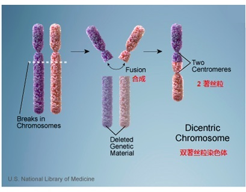
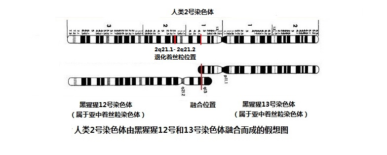

|
第七节 染色体数目的差异是猿进化成人的鸿沟
第6节中，我们已经得出了这样的结论：全人类源于最早的一对父母--科学亚当和科学夏娃。他们是由猿进化来的吗？在人类学的现代科学上是怎样看的呢？这就是本节要讨论的问题。
一．人类是由进化产生的论点
1. 建立在“群体的、逐渐的”进化论的基点
达尔文进化论的基点是“代代相傳，略有差異”（descent with modification）。意即每世代都会產生許多有变異的个体，他們的特征可以被下一代继承。并且，由于许多代变异的积累，形成了适应自然能力不同的群体。当自然环境变化时，一些不能适应的群体灭绝了，能适应的群体留下了，久而久之，形成了新的物种，这就是进化。
对于人来源于进化的描述大致是：第三纪的中新世开始变冷，森林范围缩小，部分被毁灭，出现草原和荒漠。原住在森林中的古人猿逃向赤道地区，住在森林边缘和平原上。于是“用四肢攀缘，林栖，主要吃果实的动物”，逐渐进化为能够两足直立行走、杂食、狩猎的动物。能够适
应环境变化的就保存下来，继续进化发展，不能适应的就灭绝了。第四纪更新世冰期来临，冰期和间冰期的气候冷暖和干、湿交替变化，植物覆盖、冰川、河流以及海、陆发生相应的变迁，大大促进了人类的进化。得以适应变化巨大的生存环境的，被留了下来，终于形成了人类。在人们不知道染色体和DNA时，这一切的描述显得十分合理。
2.无法逾越的鸿沟
进化论认为人与黑猩猩是共祖的。因为人进化了，而黑猩猩没有进化，所以在600多万年前分道扬镳。按照这个假定，这共同的祖先（古人猿）就应该是和黑猩猩（包括猩猩、大猩猩和红毛猩猩）一样，有24对染色体。有了高倍显微镜后，人们看到了细胞中的染色体，认识了不同的物种，往往有不同数量的染色体。
1923年，美国遗传学权威、得克萨斯大学校长西奥菲勒斯·佩音特（TheophilusPainter）提出人体的染色体数目为2n＝48，这被后来
作为一条定论充斥于各种教科书和百科全书。直到1956年美籍华裔学者蒋有兴（Joe Tjio JH）、徐道觉（Hsu TC）和Albert Levan才首先正确鉴定了人类染色体是2n＝46条而不是48条。
由此可以推断，24对染色体的古人猿与23对染色体的现代人之间有一个鸿沟，染色体对数的区别就阻断了古人猿进化成人的可能性。因为达尔文认为进化是“无数的、连续的、轻微的变异”（by
numerous, successive, slight modifications）渐变形成的，而染色体对数的差别，成为了靠着“渐变进化”无法跨越的鸿沟。就像不可能去商店购买47.99个鸡蛋，染色体条数同样不能以非整数存在，因此，不能有染色体条数的数目一点点地渐变。例如不可能在48条 (24对)染色体和46条（23对）染色体中间，存在着47.99、47.98、47.97… 等染色体条数的、渐变过程中的猿人。
达尔文在“物种起源”中说：“徜使能证明有任何复杂器官不是经过无数的、连续的、轻微的变异形成的，那么我的学说就要完全破产。但是，我还没有发见这种情形。”
中文版 第72页
人类23对染色体集合的细胞核，可以说是一种基本的、微小的“复杂器官”，也是所有器官构成的核心，恰恰它就是“不可能”从古人猿的24对染色体的细胞核“经由无数、连续地、微小的变异而形成”的。24对染色体的各种器官，也都不可能如此地“进化形成”23对染色体的器官，难道不是这样吗？达尔文没有能发现是十分合理的，因为他没有高倍显微镜。但是，达尔文的这句话，很客观地为他的理论留下了余地。今天，他留下的余地被应验了，结论是：他的“学说就要完全破产”了。
在同一书中还说：“因为自然选择只是利用微细的、连续的变异而发生作用；她从来不能采取巨大而突然的飞跃，而一定是以短的、确实的、虽然是缓慢的步骤前进。”中文版
第76页
那么，古人猿如何经由“微小而可靠的，虽然是缓慢的步骤”来跨越这个染色体数目差异的鸿沟呢？显然是不可能的。
3.从染色体、DNA看物种的隔离
仅仅是在近50年来，通过生物科学的研究，才对染色体和DNA有比较清晰的认识。我们知道，“科学是有关物质世界及其现象，并需要用到客观观察和系统实验的知识体系。”
（见《大英百科全书》
而在自然科学的知识体系方面，必须借助不同时期的技术手段来达到。一百多年前，在认定人是由古猿进化而来时，人们根本就没有高倍显微镜，也没有分析DNA的技术。可以看出，那时的认识，必然受着当时的科学技术手段所局限。
例如，马和驴交配可以产生出骡子，但公骡和母骡的交配不会产生小骡子，以前是认为“母骡后面盆骨不能开合，所以不能产子”，现在知道这是因为染色体数形成的物种隔离。马有64条染色体，驴有62条对染色体，它们交配生下的骡子是63条染色体。骡子没有生殖能力是因为染色体不成双（63个是单数），生殖细胞无法进行正常的分裂（减数分裂）。在非常罕见的情况下，骡子有可能和马（或驴）交配生出马驹（或驴驹），这新的一代染色体一定是64条或62条，它只是复原成了它的祖辈，但不可能形成一个新的物种。
其实人当中也有染色体畸变病的患者，他们只有45条（23.5对）染色体。这样的病人从外表看来，也有可能是正常的，但很难生育下一代，只有较小的机会与46条染色体的人生出正常的人，但不可能形成一个新的人种。
狮子和老虎都是38条（19对）染色体，它们互相交配有很小概率孕育生出“狮虎”（或“虎狮”）。“狮虎”也有更小的可能与狮子或老虎生出下一代，那将是一个正常的狮子或老虎，并没有发现过一个“狮虎”的新物种。为什么相同染色体数目的狮子和老虎不能交配产生一个新的物种呢？这深层的DNA原因还需要人们的继续探索，但是，由于DNA的隔离，不能产生出一个“狮虎”新物种却是一个不争的事实。
4.新进化论的理论也无法挽救进化论
现在出现了一个“综合进化理论”，试图用基因和DNA突变来詮解古老的进化论。然而，无论是突变、遗传漂变和基因流动等因素，都不可能实现古人猿经由“微小而可靠的，虽然是缓慢的步骤”，去改变染色体的对数。23对染色体和24对染色体对数差异，仍然是这些新进化论无法逾越的鸿沟。
二．骤变产生“23对染色体人的始祖”的假说
面对进化论无法解决的染色体鸿沟问题，有人重新提出了物种产生的“骤变论”，认为是古人猿的染色体发生了骤变，24对染色体瞬间变成了23对，产生了两个23对染色体的现代人始祖，并以此跨过了染色体对数的鸿沟。
骤变论（Saltation ：Jumping and discontinuous changes)认为生物的变异，是“非渐进”的，甚至只需要一个步骤便能形成新物种。提出骤变论的重要人物之一是米瓦特（St. George Jackson Mivart
，1827–1900)，他是一位和达尔文同时代的生物学家。米瓦特相信新物种“是突然的，而且是一蹴而成”产生的（“with
suddenness and by modifications appearing at once.”）。1871年，米瓦特出版了他的著作《在物种的成因》（On the Genesis
of Species）和达尔文进行了针锋相对的争论，我们在第九节还要详细叙述。
1.建立在DNA“骤变” 假说上的基点
这个假说是建立在以下三个基点上：
（1）人类和黑猩猩有共同祖先：24对染色体的古人猿。黑猩猩没有进化，仍保持了24对染色体；
（2）由于骤变，古人猿的24对染色体中的两个染色体发生了融合，变成了人的2号染色体，因此产生了具有23对染色体的人类；
（3）这种因骤变产生染色体融合的现象，可以参考的是在目前人类中仍然存在着的染色体病：罗伯逊易位病 ( Robertsonian
translocation)。
2. 罗伯逊易位病
根据着丝粒的位置，人类染色体可以分为三种：（1）近中着丝粒染色体，着丝粒位于或靠近染色体中央，将染色体分为长短相近的两个臂；(2)亚中着丝粒染色体，着丝粒偏于一端，将染色体分为长短明显不同的两个臂；(3)近端着丝粒染色体，着丝粒非常靠近染色体的一个顶端。
罗伯逊易位是一种常见的染色体疾病，其发病率约为千分之一，都是“近端着丝粒染色体”的融合。在人类细胞核中的23对染色体中，有5对“近端着丝粒染色体”，如图7-2中的13、14、 15、 21 和
22号染色体。
罗伯逊易位是在“近端着丝粒染色体”的“着丝粒处”或其附近断裂后，两个染色体融合为一个染色体，形成了异常的染色体结构。例如，在生殖细胞“减数分裂”产生精子时，其第13号染色体和第14号染色体的长臂融合成了一个染色体（它们的短臂丢失），那么这个精子中，只包含了22条染色体。因为“近端着丝粒染色体”的短臂相当短，丢失的遗传信息不多，这个精子仍然可以产生受孕。当这个精子和一个正常卵子（包含23条染色体）结合时，就会产生出45条染色体的胚胎。当这个胚胎发育成长成人后，仍然可以是一个基本正常（医学上叫表型正常--Phenotype
normal[注释1]）的人，只是这样的病人即使和正常染色体的配偶结合，在孕育时，常常会发生自然流产、死胎、畸形生育等病症，只有很小的几率生出正常的、23对染色体的孩子。

图7-1 人类的23对染色体的着丝粒位置图
3．人类的2号染色体
2005年4月，在英国《自然》杂志上，“美国国家人类基因组研究所”发布了由122位研究人员签名的研究报告“Generation
and annotation of the D NA sequences of human chromosomes 2 and 4”“人类2号和4号染色体全面注解的序列”，这是世界基因组研究计划中的一个项目。此报告应该是对2号染色体最权威的研究成果 。
在报告的结论中有这样的说明：“在2号染色体上，过去曾经描述过，在2q13–2q14.1位置上，有围绕着祖先染色体融合的区域。在这里，我们鉴定出2q21.1-2q21.2内一段2.6-Mb区域内有着丰富的近着丝粒、重复和着丝粒卫星重复序列”，这“也许是标志着祖先的端粒和着丝粒，可能代表着人类世系中的常染色体的经常性重组。”
“On chromosome 2, the local region surrounding the ancestral
chromosomal Fusion site on 2q13–2q14.1 had previously been described. Here we
identified a 2.6-Mb region within 2q21.1–2q21.2
that is enriched for pericentromeric duplications
and centromeric satellite repeat sequence motifs”，“ perhaps representative of
recurrent chromosome rearrangements in the human lineage.”
在第6节中，我们已经质疑了“在2q13–2q14.1位置上”所谓的融合区的“TTAGGG”序列，知道它不可能是表达两个染色体端粒的融合。但是在这里，我们仍然按照骤变论的设想，继续的来进行分析。
根据这个报告结论，假定了人的2号染色体，是由两个古人猿的染色体融合而成。参照罗伯逊易位的病理和上面结论中所描述的融合点的位置、退化着丝粒的位置，研究人员绘制了图片（图7-2），表达了它们的融合的方式。

图7-2 骤变论对2号染色体合成的假想图
按照上面报告的结论和此图，可以在人类2号染色体的结构图上，明确地划分出融合点和残留着丝粒的位置（图7-3）。

图7-3 2号染色体融合假想图（这只是一个假想图，您不能把它看成真的）
|